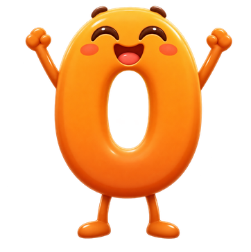
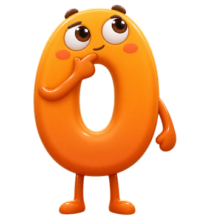

N-01 수 세기 · 「누미의 마법 노트」 영상 콘티
총 길이구현 65초(S3b 포함). 앱 음성이 0.8배속이라 초안 약 46초보다 길어졌어요
형식앱 안 코드 애니메이션 · 마법 노트 탭에서 재생
그림기존 누미 그림 + 이모지(🐤🐑) + 그린 조약돌. 새 그림 생성 없음
쓰는 수3과 5만 사용(유아 수 범위 9 이내)
목소리누미 목소리(OmniVoice 복제). 새 대사 9줄 생성 필요, 1줄 재사용
S0 3초
S1 양치기 9초
S2 하나씩 짚기 10초
S3 마지막 수 6초
S4 섞어도 다섯 7초
S5 4초
장면별 콘티
S0
시작 · 마법 노트가 열려요
3초S0-1 · 0.0초

누미의 마법 노트
수 세기
수 세기
📖 노트가 펼쳐지며 반짝
| 그림 | 웃는 누미(numi-0-happy.png) 옆에서 노트가 펼쳐짐. 노트 줄무늬 바탕에 제목 「누미의 마법 노트 · 수 세기」. |
|---|---|
| 물체 수 | 누미 1. 셀 물체 없음. |
| 대사(누미) | “누미의 마법 노트, 열려라!” |
| 화면 글자 | 누미의 마법 노트 · 수 세기 |
| 움직임 | 노트 펼침(0.6초) → 별가루 3개 반짝. 시작 전 「▶ 소리와 함께 보기」 버튼을 눌러야 재생(자동 재생은 소리가 막히므로). |
S1
옛날 양치기의 조약돌
9초 (나갈 때 4초 + 돌아올 때 5초)S1-1 · 아침
🐑🐑🐑
👝
양 1마리 나갈 때마다 조약돌 1개 → 주머니
S1-2 · 저녁
🐑🐑🐑
👝
돌아온 양 1마리마다 조약돌 1개를 꺼내요
S1-3 · 끝
🐑🐑🐑
👝
돌이 하나도 안 남았어요 → 다 돌아왔어요!
| 그림 | 들판(아침 → 저녁 색 변화), 양 🐑, 회색 조약돌, 주머니 👝. 사람은 그리지 않음(설명 대사로 대신). |
|---|---|
| 물체 수 | 양 3 · 조약돌 3. 장면 내내 양과 돌의 수가 항상 같아야 함(짝 1:1). |
| 대사(누미) | ① “아주 옛날 양치기는 양이 한 마리 나갈 때마다 조약돌을 하나씩 주머니에 넣었어요.” ② “저녁엔 돌아온 양마다 돌을 하나씩 꺼냈어요. 돌이 안 남았네? 양이 다 돌아왔어요!” |
| 화면 글자 | 자막만(대사와 같음). |
| 움직임 | 양 1마리 걸어 나감 → 돌 1개가 주머니로 쏙(1.2초 간격 ×3). 저녁에 양 1마리 돌아옴 → 돌 1개 꺼내져 사라짐(×3). 양과 돌이 같은 박자로 움직여 짝이 보이게. |
| 검수 | 어느 순간에도 “나간 양 수 = 주머니 속 돌 수”, “돌아온 양 수 = 꺼낸 돌 수”. |
S2
하나씩 짚어요
10초S2-1 · 시작

🐤🐤🐤🐤🐤
병아리가 몇 마리일까?
S2-2 · 셋까지
🐤1🐤2🐤3🪄🐤🐤
“하나, 둘, 셋…”
S2-3 · 다섯까지
🐤1🐤2🐤3🐤4🐤5🪄
“…넷, 다섯!”
| 그림 | 누미(numi-0.png) 왼쪽, 병아리 한 줄. 누미의 마법봉 🪄 끝이 병아리를 하나씩 톡. |
|---|---|
| 물체 수 | 병아리 5(한 줄, 같은 간격). |
| 대사(누미) | “병아리가 몇 마리일까? 하나씩 톡톡 짚어 볼게. 하나, 둘, 셋, 넷, 다섯!” |
| 화면 글자 | 짚은 병아리 위에 숫자 1~5 배지. 자막. |
| 움직임 | 질문 2초 → 짚기 5번, 1.3초 간격. 짚는 순간 병아리 살짝 폴짝 + 숫자 배지 + 수 이름 소리가 동시에. 짚은 병아리엔 작은 별 ✦ 표시가 남음(한 번만 짚었다는 표시). |
| 검수 | 짚기 1번 = 수 이름 1개 = 배지 1개. 짚기 전에는 숫자가 미리 나오지 않음. 소리와 배지 시차 0.15초 이내. |
S3
마지막 수가 모두 몇 개!
6초S3-1
🐤🐤🐤🐤🐤5
5
마지막에 말한 “다섯” = 모두 다섯 마리
| 그림 | S2와 같은 자리의 병아리 5마리를 금색 점선 고리가 한 번에 감쌈. 오른쪽 위에 큰 숫자 5. 누미 웃는 얼굴(numi-0-happy.png). |
|---|---|
| 물체 수 | 병아리 5(S2와 위치·수 동일). |
| 대사(누미) | “마지막에 말한 ‘다섯’이 모두 몇 마리인지 알려 줘요. 모두 다섯 마리!” |
| 화면 글자 | 큰 숫자 5 · “모두 5마리” |
| 움직임 | 1~4번 배지는 사라지고 5번 배지만 커지며 오른쪽 위 큰 5로 날아감 → 고리가 다섯 마리를 감쌈. |
| 검수 | 큰 숫자는 마지막 배지에서 나와야 함(“5번째 병아리 이름”이 아니라 “전체 개수”로 읽히게 고리를 함께 보여 줌). |
S3b · 선택
앗, 두 번 짚으면?
약 7초S3b-1 · 실수

🐤1🐤2🐤3·4🐤🐤
한 마리를 두 번 짚으면 수가 틀려요
S3b-2 · 바로잡기
🐤1🐤2🐤3🐤4🐤
한 마리에 한 번씩만!
| 그림 | S2와 같은 병아리 5마리. 누미 갸웃(numi-0-think.png). 두 번 짚은 병아리 배지가 빨갛게 “3·4”. |
|---|---|
| 물체 수 | 병아리 5. |
| 대사(누미) | “어? 한 마리를 두 번 짚었더니 이상해졌어. 한 마리에 한 번씩만 짚어요!” |
| 움직임 | 3번째 병아리를 두 번 톡 → 배지 흔들림 → 되감기처럼 배지 지워짐 → 4번째부터 다시. |
| 판단 필요 | 유아가 가장 많이 하는 실수(두 번 세기·건너뛰기)를 보여 주는 장점이 있지만, 틀린 장면이 기억에 남을 위험도 있습니다. 넣을지 정해 주세요. |
S4
섞어도, 다른 쪽부터 세어도 다섯
7초S4-1 · 섞기
🐤🐤🐤
🐤🐤
병아리들이 흩어졌어요
S4-2 · 오른쪽부터
🐤5🐤2🐤1
🐤4🐤3
5
순서를 바꿔 세어도 모두 5마리!
| 그림 | 같은 병아리 5마리가 통통 튀며 흩어진 자리로 이동. 누미는 화면 밖(병아리에 집중). |
|---|---|
| 물체 수 | 병아리 5(S2와 같은 병아리, 자리만 바뀜). 새로 생기거나 사라지는 병아리 없음. |
| 대사(누미) | “병아리들이 자리를 바꿨어! 이번엔 오른쪽부터. 하나, 둘, 셋, 넷, 다섯! 그래도 다섯 마리!” |
| 화면 글자 | 배지 1~5(앞과 다른 순서), 큰 숫자 5. |
| 움직임 | 흩어지기 1초 → 오른쪽 위부터 짚기 5번, 0.9초 간격(S2보다 조금 빠르게) → 큰 5. |
| 검수 | 흩어지는 중에 병아리가 겹쳐 4마리로 보이는 프레임이 없어야 함(최소 간격 유지). |
S5
마법 노트 규칙
약 4초(기존 녹음 3.9초)S5-1
✦ 하나씩 짚어요!
✦ 마지막 수가 전체 개수예요.
✦ 마지막 수가 전체 개수예요.
이제 직접 세어 볼까?
| 그림 | 노트 바탕 + 규칙 두 줄이 한 줄씩 써짐. 누미 웃는 얼굴. |
|---|---|
| 물체 수 | 셀 물체 없음. |
| 대사(누미) | “하나씩 짚어요! 마지막 수가 전체 개수예요.” (기존 녹음 재사용: ko-a5199fa5087c.mp3, 3.92초) |
| 화면 글자 | 규칙 두 줄(유닛의 rule 문구와 같게). |
| 움직임 | 글자가 써지는 효과 → 끝나면 「다시 보기」「직접 해 보기」 버튼. |
구현 기준
- 넣을 자리: N-01 discover(마법 노트) 단계에 「▶ 영상으로 보기」 버튼. 기존 글 단계(
mathSteps)는 지우지 않고 그대로 둡니다. - 조작: 재생/일시정지, 다시 보기, 자막 켜기/끄기, 건너뛰기. 일시정지 후 다시 재생해도 병아리 수·배지가 같은 상태여야 합니다.
- 움직임 줄이기 설정: 기기에서 움직임 줄이기를 켠 경우 장면별 정지 화면과 소리로 차례 넘김.
- 장면이 끝나거나 화면을 나가면 타이머·소리를 모두 정리합니다.
- 언어: 한국어 먼저. 영어·중국어 자막과 음성은 한국어 확정 뒤 같은 장면에 붙입니다.
- 검사: 장면마다 “보이는 물체 수”를 코드로 세어 콘티 숫자와 대조하는 검사를 둡니다. 소리는 생성 뒤 실제로 들어 보고 확인합니다.
새로 만들 음성 (누미 목소리)
아래 9줄은 새로 생성해야 합니다. 기존 방식대로 OmniVoice(누미 목소리 복제)로 만들며, 이 맥에서는 생성할 수 없어 GitHub Actions 작업 또는 원장 PC(GPU)에서 돌려야 합니다. 생성 전에는 브라우저 음성으로 미리보기만 합니다.
- S0 “누미의 마법 노트, 열려라!”
- S1① “아주 옛날 양치기는 양이 한 마리 나갈 때마다 조약돌을 하나씩 주머니에 넣었어요.”
- S1② “저녁엔 돌아온 양마다 돌을 하나씩 꺼냈어요. 돌이 안 남았네? 양이 다 돌아왔어요!”
- S2 “병아리가 몇 마리일까? 하나씩 톡톡 짚어 볼게.”
- 수 이름 5개 “하나” “둘” “셋” “넷” “다섯” (각각 따로, S2·S4 공용)
- S3 “마지막에 말한 ‘다섯’이 모두 몇 마리인지 알려 줘요. 모두 다섯 마리!”
- S4① “병아리들이 자리를 바꿨어! 이번엔 오른쪽부터.”
- S4② “그래도 다섯 마리!”
- (S3b를 넣으면) “어? 한 마리를 두 번 짚었더니 이상해졌어. 한 마리에 한 번씩만 짚어요!”
정해 주실 것
- S3b(두 번 짚으면 틀려요)를 넣을까요?
- S1 양치기 이야기를 유아용으로 넣을까요, 아니면 S2부터 바로 시작할까요? (빼면 약 30초)
- 말투: S2·S4는 누미 반말(“짚어 볼게”), 설명은 해요체(“알려 줘요”)로 섞었습니다. 유닛의 기존 말투와 같습니다. 그대로 갈까요?